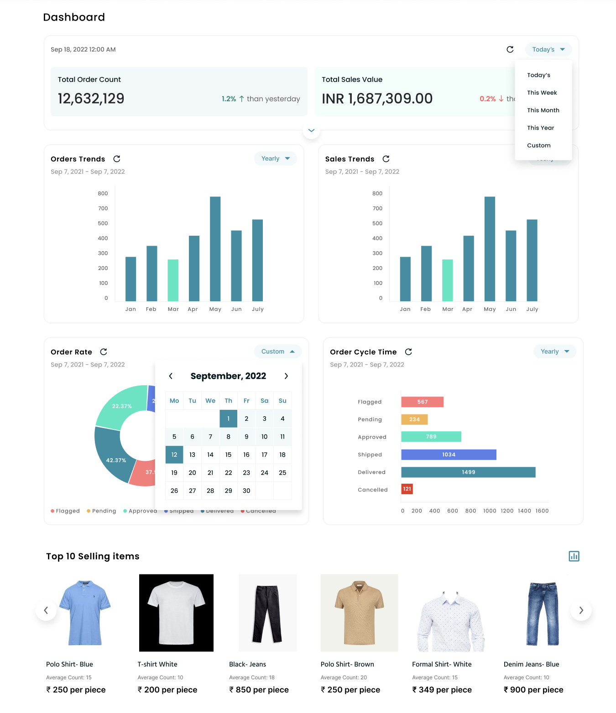
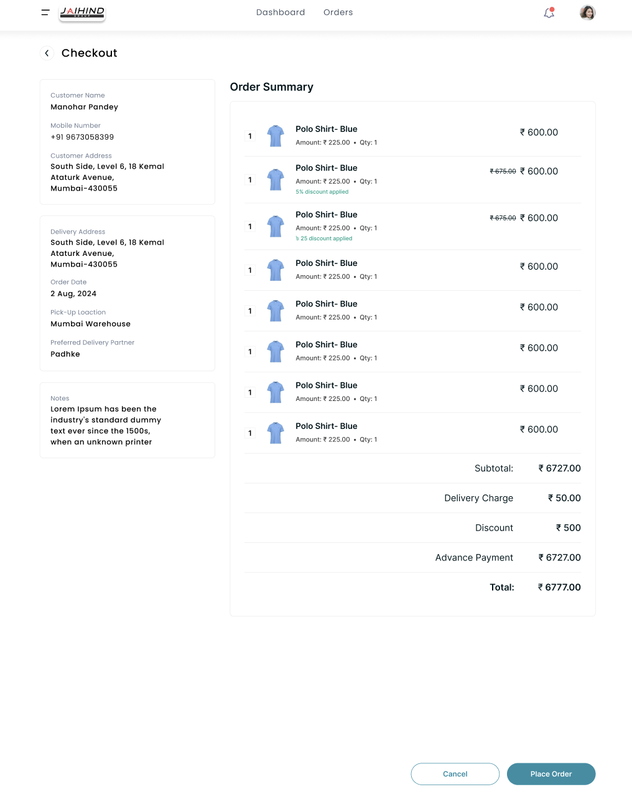
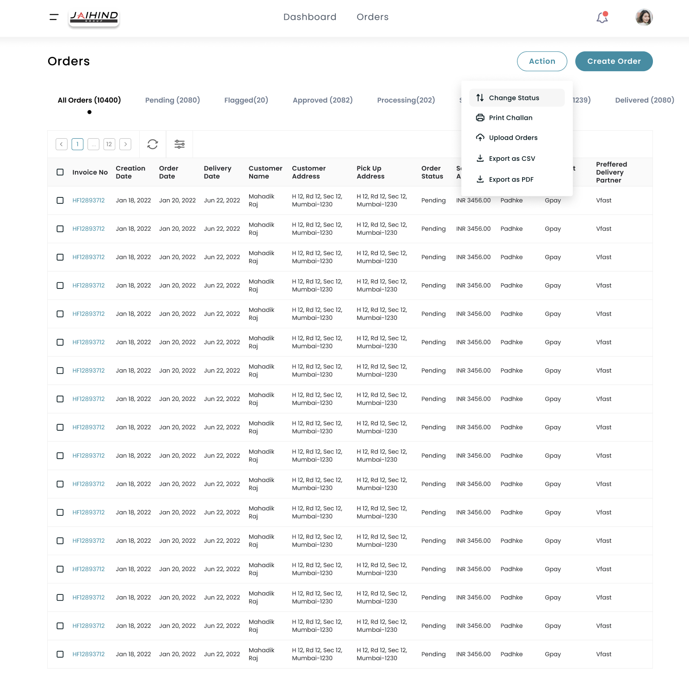

Designed Data-Heavy Inventory Dashboard for JaiHind Group
Designed a data-heavy inventory management dashboard to support merchandising, warehouse, and sales teams. Translated 30+ complex operational requirements into clear layouts, resulting in 35% faster task completion and 40% higher adoption.

Note
Due to the B2B nature of this project, specific sales data has been obfuscated. Below is a structured overview of the what, why, who, where, and how of this engagement to give you a short understanding of my role.
Challenge
JaiHind's merchandising and warehouse teams were relying on manual tracking and disjointed spreadsheets. They faced friction points in their daily workflows, leading to slow decision-making and high cognitive load when managing stock.
Solution
Designed a centralized, data-heavy dashboard from the ground up. I translated over 30+ complex operational requirements into clear, scannable layouts that reduced cognitive load and improved decision-making for cross-functional teams.
Impact
The new system replaced manual tracking, resulting in approximately 35% faster task completion and 40% higher internal adoption. Navigation issues were reduced by around 30% through targeted UX improvements.
The problem
To understand the operational gaps, I led stakeholder interviews, workflow audits, and usability reviews. The goal was to identify friction points in the existing manual processes. Here are some quoted issues faced by the teams:
We are doing everything manually. Tracking stock takes hours because we are switching between 5 different spreadsheets.
”I can't make quick decisions on restocking because the data isn't in one place. It's too much cognitive load.
”New employees take weeks to learn our manual system because it's not standardized.
”We need a way to scan inventory status instantly without calculating it ourselves.
”The User
The target audience for this dashboard included Merchandising, Warehouse, and Sales teams who needed a unified platform to track inventory, manage SKUs, and view stock alerts without relying on manual entry.
The dashboard was deployed within JaiHind Group's internal ecosystem as a new B2B web application.
My Contribution
Research & Audits
Led stakeholder interviews and workflow audits to identify friction points, which helped in reducing future navigation issues by around 30%.
Information Architecture (IA)
Translated over 30+ complex operational requirements into clear, scannable dashboard layouts, prioritizing data visibility to reduce cognitive load.
UI Design & Iteration
Iterated on dense UI components and shortcut patterns. Designed the visual system to handle high data density while maintaining clarity.
Cross-Functional Collaboration
Collaborated with cross-functional teams to refine shortcut patterns, improving operational efficiency and reducing reliance on manual tracking.
What did I learn?
1. Designing for Density
I learnt that "simple" doesn't mean "empty." Designing for data-heavy environments requires balancing density with scannability. I developed skills in creating layouts that allow users to parse 30+ requirements without feeling overwhelmed.
2. Workflow over Interface
I reflected carefully on how the new dashboard would alter the team's daily habits. By focusing on shortcut patterns, I learned how to drive adoption (40% increase) by making the digital tool faster than their manual habits.
Conclusion
Thank you for reading! This engagement was crucial in shaping my ability to handle complex B2B data. It taught me how to translate operational chaos into digital structure, ultimately helping the business move 35% faster.
Final Design Gallery
Here are the high-fidelity screens representing the key workflows I designed. Click any image to view it in full size.



